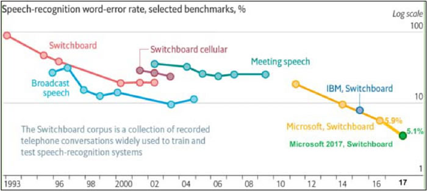
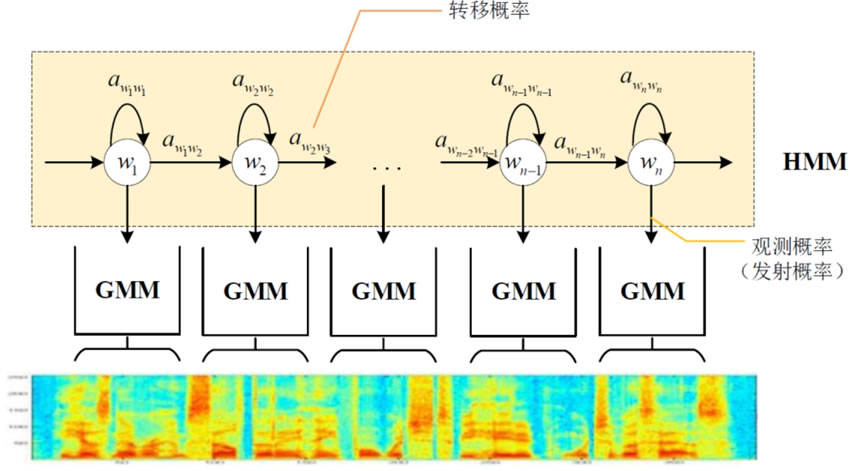
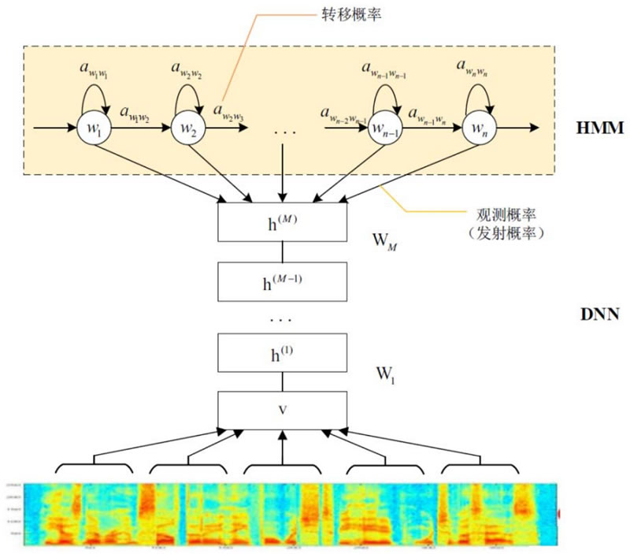
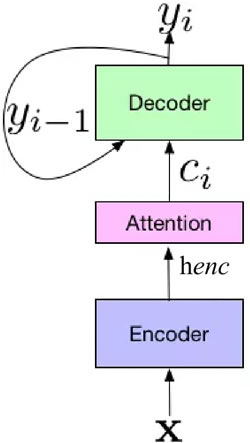
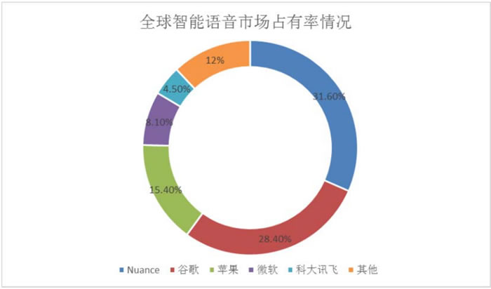

首页 > 编程笔记
语音识别技术介绍（超级详细）
语音识别技术是将声音转化成文字的一种技术，类似于人类的耳朵，拥有听懂他人说话的内容并将其转换成可以辨识的内容的能力。
不妨设想一个场景，当你加完班回到家中，疲惫地躺在沙发上，随口一句“打开电视”，沙发前的电视按命令开启，然后一个温柔的声音问候你，“今天想看什么类型的电影？”或者主动向你推荐目前流行的一些影片。
这些都是语音识别所能够处理的场景，虽然看似科幻，但是实际上这些场景已经不再是以往人们的设想，正在悄悄地走进你我的生活。
2018 年，谷歌在开发者大会上演示了一个预约理发店的聊天机器人，语气惟妙惟肖，表现相当令人惊艳。相信很多读者都接到过人工智能的推销电话，不去仔细分辨的话，根本不知道电话那头只是一个能够做出语音处理的聊天机器人程序。
“语音转换”“人机对话”“机器人客服”是语音识别应用广泛的三部分，也是商业价值较高的一些方向。此外，还有看图说话等一些带有娱乐性质的应用。这些统统是语音识别技术的应用。
语音识别通常称为自动语音识别（Automatic Speech Recognition，ASR），主要是将人类语音中的词汇内容转换为计算机可读的输入，一般都是可以理解的文本内容，也有可能是二进制编码或者字符序列。
语音识别是一项融合多学科知识的前沿技术，覆盖了数学与统计学、声学与语言学、计算机与人工智能等基础学科和前沿学科，是人机自然交互技术中的关键环节。但是，语音识别自诞生以来的半个多世纪，一直没有在实际应用过程得到普遍认可。一方面，语音识别技术存在缺陷，其识别精度和速度都达不到实际应用的要求；另一方面，业界对语音识别的期望过高，实际上语音识别与键盘、鼠标或触摸屏等应该是融合关系，而非替代关系。
深度学习技术自 2015 年兴起之后，已经取得了长足进步。语音识别的精度和速度取决于实际应用环境，但在安静环境、标准口音、常见词汇场景下的语音识别率已经超过95%，意味着具备了与人类相仿的语言识别能力，而这也是语音识别技术当前发展比较火热的原因。
随着技术的发展，现在口音、方言、噪声等场景下的语音识别也达到了可用状态，特别是远场语音识别已经随着智能音箱的兴起，成为全球消费电子领域应用最成功的技术之一。由于语音交互提供了更自然、更便利、更高效的沟通形式，因此语音必定成为未来主要的人机互动接口之一。
当然，当前技术还存在很多不足，如对于强噪声、超远场、强干扰、多语种、大词汇等场景下的语音识别还需要很大的提升；另外，多人语音识别和离线语音识别也是当前需要重点解决的问题。虽然语音识别还无法做到无限制领域、无限制人群的应用，但是至少从应用实践中我们看到了一些希望。当然，实际上自然语言处理并不限于上文所说的这些，随着人们对深度学习的了解，更多应用正在不停地开发出来，相信读者会亲眼见证这一切的发生。
图 1 所示是 1993~2017 年在 Switchboard 上语音识别率的进展情况，从图中可以看出：
该方法对解决孤立词识别是有效的，但对于大词汇量、非特定人的连续语音识别就无能为力。因此，进入 80 年代后，研究思路发生了重大变化，从传统的基于模板匹配的技术思路开始转向基于统计模型（HMM）的技术思路。
HMM 的理论基础在 1970 年前后就已经由 Baum 等人建立起来，随后由 CMU 的 Baker 和 IBM 的 Jelinek 等人将其应用到语音识别中。
HMM 模型假定一个音素含有 3~5 个状态，同一状态的发音相对稳定，不同状态间可以按照一定概率进行跳转，某一状态的特征分布可以用概率模型来描述，使用最广泛的模型是 GMM。因此，在 GMM-HMM 框架中，HMM 描述的是语音的短时平稳的动态性，GMM 用来描述 HMM 每一状态内部的发音特征，如图 2 所示。
基于 GMM-HMM 框架，研究者提出了各种改进方法，如结合上下文信息的动态贝叶斯方法、区分性训练方法、自适应训练方法、HMM/NN 混合模型方法等。这些方法都对语音识别研究产生了深远影响，并为下一代语音识别技术的产生做好了准备。
自 20 世纪 90 年代语音识别声学模型的区分性训练准则和模型自适应方法被提出以后，在很长一段时间内语音识别的发展都比较缓慢，语音识别错误率一直没有明显的下降。
2009 年，Hinton 将 DNN 应用于语音的声学建模，在 TIMIT 上获得了当时最好的结果。2011 年底，微软研究院的俞栋、邓力又把 DNN 技术应用在了大词汇量连续语音识别任务上，大大降低了语音识别的错误率。从此，语音识别进入 DNN-HMM 时代。
DNN-HMM 主要是用 DNN 模型代替原来的 GMM 模型，对每一个状态进行建模，如图 3 所示。
DNN带来的好处是不再需要对语音数据分布进行假设，将相邻的语音帧拼接，又包含了语音的时序结构信息，使得对于状态的分类概率有了明显提升，同时DNN还具有强大的环境学习能力，可以提升对噪声和口音的鲁棒性。
简单来说，DNN 就是给出输入的一串特征所对应的状态概率。由于语音信号是连续的，不仅各个音素、音节以及词之间没有明显的边界，各个发音单位还会受到上下文的影响。虽然拼帧可以增加上下文信息，但对于语音来说还是不够。而递归神经网络（RNN）的出现可以记住更多历史信息，更有利于对语音信号的上下文信息进行建模。
总体来说，端到端技术解决了输入序列的长度远大于输出序列长度的问题。端到端技术主要分成两类：一类是 CTC（Connectionist Temporal Classification）方法，另一类是 Sequence-to-Sequence 方法。
采用 CTC 作为损失函数的声学模型序列，不需要预先对数据对齐，只需要一个输入序列和一个输出序列就可以进行训练。CTC 关心的是预测输出的序列是否和真实的序列相近，而不关心预测输出序列中每个结果在时间点上是否和输入的序列正好对齐。CTC 建模单元是音素或者字，因此它引入了 Blank。对于一段语音，CTC 最后输出的是尖峰的序列，尖峰的位置对应建模单元的 Label，其他位置都是 Blank。
Sequence-to-Sequence 方法原来主要应用于机器翻译领域。2017 年，Google 将其应用于语音识别领域，取得了非常好的效果，将词错误率降低至 5.6%。如图 4 所示。
Google 提出的新系统框架由三部分组成：
端到端技术的突破不再需要 HMM 来描述音素内部状态的变化，而是将语音识别的所有模块统一成神经网络模型，使语音识别朝着更简单、更高效、更准确的方向发展。
第一个关键节点是 1988 年的一篇博士论文，开发了第一个 GMM-HMM 的语音识别系统——Sphinx。
从 1986~2010 年，虽然混合高斯模型的效果得到持续改善，而被应用到语音识别中，并且确实提升了语音识别的效果，但实际上语音识别已经遭遇了技术天花板，识别的准确率很难超过 90%。很多人可能还记得，在 1998 年前后，IBM、微软都曾推出过和语音识别相关的软件，但最终并未取得成功。
第二个关键节点是 2015 年深度学习被系统应用到语音识别领域中。这导致识别的精度再次大幅提升，最终突破 90%，并且在标准环境下逼近 98%。
有意思的是，尽管技术取得了突破，也涌现出了一些与此相关的产品，比如 Siri、Google Assistant 等，但与其引起的关注度相比，这些产品实际取得的成绩则要逊色得多。Siri 刚一面世的时候，时任 Google CEO 的施密特就高呼，这会对 Google 的搜索业务产生根本性威胁，但事实上直到 Amazon Echo 面世，这种根本性威胁才真正地有了具体的载体。
第三个关键点正是 Amazon Echo 的出现，纯粹从语音识别和自然语言理解的技术乃至功能的视角看这款产品，相对于 Siri 等并未有什么本质性改变，核心变化只是把近场语音交互变成了远场语音交互。
Echo 正式面世于 2015 年 6 月，到 2017 年销量已经超过千万，同时在 Echo 上扮演类似 Siri 角色的 Alexa 逐渐成熟，其后台的第三方技能已经突破 10000 项。借助落地时从近场到远场的突破，亚马逊一举从这个赛道的落后者变为行业领导者。
但自从远场语音技术规模落地以后，语音识别领域的产业竞争已经开始从研发转为应用。研发比的是标准环境下纯粹的算法谁更有优势，而应用比的是在真实场景下谁的技术更能产生优异的用户体验，一旦比拼真实场景下的体验，语音识别便失去独立存在的价值，更多作为产品体验的一个环节而存在。
所以到 2019 年，语音识别似乎进入了相对平静期，全球产业界的主要参与者们，包括亚马逊、谷歌、微软、苹果、百度、科大讯飞、阿里、腾讯、云知声、思必驰、声智等公司，在一路狂奔过后纷纷开始反思自己的定位和下一步的打法。各公司的占有率如图 5 所示。
语音赛道里的标志产品——智能音箱以一种大跃进的姿态出现在大众面前。2017 年以前，智能音箱玩家对这款产品的认识还都停留在：亚马逊出了一款叫 Echo 的产品，功能和 Siri 类似。先行者科大讯飞叮咚音箱的出师不利更是加重了其他人的观望心态。
真正让众多玩家从观望转为积极参与的转折点是逐步曝光的 Echo 销量。2017 年年底，Echo 在美国近千万的销量让整个世界震惊。这是智能设备从未达到过的高点，在 Echo 以前，除了 Apple Watch 与手环，像恒温器、摄像头这样的产品突破百万销量已是惊人表现。2017 年下半年，这种销量以及智能音箱的 AI 属性促使国内各大巨头几乎是同时转变态度，积极打造自己的智能音箱。
回顾整个发展历程，2019 年是一个明确的分界点。在此之前，全行业突飞猛进，但 2019 年之后则开始进入对细节领域渗透和打磨的阶段，人们关注的焦点也不再是单纯的技术指标，而是回归到体验，回归到一种“新的交互方式到底能给我们带来什么价值”这样更为一般的、纯粹的商业视角。
技术到产品，再到是否需要与具体的形象进行交互结合，比如人物形象，流程自动化是否要与语音结合，酒店场景应该如何使用这种技术来提升体验，诸如此类最终都会一一呈现在从业者面前。而此时行业的主角也会从原来的产品方过渡到平台提供方，AIoT 纵深过大，没有任何一个公司可以全线打造所有的产品。
离这个界限越近，行业就越会接近滚雪球式发展的临界点，否则整体增速就会相对平缓。无论是家居、酒店、金融、教育或者其他场景，如果解决问题都是非常高投入并且长周期的事情，那对此承担成本的一方就会犹豫，这相当于试错成本过高。如果投入后，没有可感知的新体验或者销量促进，那对此承担成本的一方也会犹豫，显然这会影响值不值得上的判断。而这两件事情归根结底都必须由平台方解决，产品方或者解决方案方对此无能为力，这是由智能语音交互的基础技术特征所决定的。
从核心技术来看，整个语音交互链条有 5 项单点技术：唤醒、麦克风阵列、语音识别、自然语言处理和语音合成，其他技术点，比如声纹识别、哭声检测等数十项技术通用性略弱，但分别出现在不同的场景下，并会在特定场景下成为关键。看起来关联的技术已经相对庞杂，但切换到商业视角就会发现，距离使用这些技术打造一款体验上佳的产品仍然有很长一段路要走。
所有语音交互产品都是端到端打通的产品，如果每家厂商都从这些基础技术来打造产品，那就每家都要建立云服务稳定、确保响应速度、适配自己所选择的硬件平台，逐项整合具体的内容（比如音乐、有声读物）。这从产品方或者解决方案商的视角来看是不可接受的。这时候就会催生相应的平台服务商，它要同时解决技术、内容接入和工程细节等问题，最终达成试错成本低、体验却足够好的目标。
平台服务不需要闭门造车，平台服务的前提是要有能屏蔽产品差异的操作系统，这是 AI+IoT 的特征，也是有所参照的，亚马逊过去近 10 年同步着手做两件事：
虽然 Google Assistant 号称单点技术更为领先，但从各方面的结果来看，Alexa 是当之无愧的最领先的系统平台，可惜的是 Alexa 并不支持中文以及相应的后台服务。
国内则缺乏具有亚马逊这种统治力的系统平台提供商，当前的平台提供商分为两个阵营：
新兴的人工智能公司相比传统公司产品和服务上的历史包袱更轻，因此在平台服务上反倒是可以主推一些更为面向未来、有特色的基础服务，比如兼容性方面，新兴公司做得更加彻底，这种兼容性对于一套产品同时覆盖国内、国外市场是相当有利的。
类比过去的 Android，语音交互的平台提供商其实面临更大的挑战，发展过程可能会更加曲折。过去经常被提到的操作系统的概念，在智能语音交互背景下事实上正被赋予新的内涵，它日益被分成两个不同但必须紧密结合的部分。
过去的 Linux 以及各种变种承担的是功能型操作系统的角色，而以 Alexa 为代表的新型系统则承担的是智能型系统的角色。前者完成完整的硬件和资源的抽象和管理，后者则让这些硬件以及资源得到具体的应用，两者相结合才能输出最终用户可感知的体验。
功能型操作系统和智能型操作系统注定是一种一对多的关系，不同的 AIoT 硬件产品在传感器（深度摄像头、雷达等）、显示器（有屏、无屏、小屏、大屏等）上具有巨大差异，这会导致功能型系统的持续分化（可以和Linux的分化相对应）。这反过来也就意味着一套智能型系统必须同时解决与功能型系统的适配，以及对不同后端内容、场景进行支撑的双重责任。
这个双重责任在操作上具有巨大差异。解决前者需要参与到传统的产品生产制造链条中，而解决后者则更像应用商店的开发者。这里面蕴含着巨大的挑战和机遇。在过去功能型操作系统的打造过程中，国内的程序员更多的是使用者的角色，智能型操作系统虽然也可以参照其他，但这次必须自己从头打造完整的系统（国外巨头无论在中文相关的技术上，还是内容整合上事实上都非常薄弱，不存在侵略国内市场的可能性）。
随着平台服务商两边的问题解决得越来越好，基础的计算模式会逐渐发生改变，人们的数据消费模式会与今天不同。个人的计算设备（当前主要是手机、笔记本、平板电脑）会根据不同场景进一步分化。比如在车上、家里、酒店、工作场景、路上以及业务办理等会根据地点和业务进行分化。但分化的同时背后的服务是统一的，每个人可以自由地根据场景进行设备的迁移，背后的服务虽然会针对不同的场景进行优化，但在个人偏好这一点上则是统一的。
不妨设想一个场景，当你加完班回到家中，疲惫地躺在沙发上，随口一句“打开电视”，沙发前的电视按命令开启，然后一个温柔的声音问候你，“今天想看什么类型的电影？”或者主动向你推荐目前流行的一些影片。
这些都是语音识别所能够处理的场景，虽然看似科幻，但是实际上这些场景已经不再是以往人们的设想，正在悄悄地走进你我的生活。
2018 年，谷歌在开发者大会上演示了一个预约理发店的聊天机器人，语气惟妙惟肖，表现相当令人惊艳。相信很多读者都接到过人工智能的推销电话，不去仔细分辨的话，根本不知道电话那头只是一个能够做出语音处理的聊天机器人程序。
“语音转换”“人机对话”“机器人客服”是语音识别应用广泛的三部分，也是商业价值较高的一些方向。此外，还有看图说话等一些带有娱乐性质的应用。这些统统是语音识别技术的应用。
语音识别通常称为自动语音识别（Automatic Speech Recognition，ASR），主要是将人类语音中的词汇内容转换为计算机可读的输入，一般都是可以理解的文本内容，也有可能是二进制编码或者字符序列。
语音识别是一项融合多学科知识的前沿技术，覆盖了数学与统计学、声学与语言学、计算机与人工智能等基础学科和前沿学科，是人机自然交互技术中的关键环节。但是，语音识别自诞生以来的半个多世纪，一直没有在实际应用过程得到普遍认可。一方面，语音识别技术存在缺陷，其识别精度和速度都达不到实际应用的要求；另一方面，业界对语音识别的期望过高，实际上语音识别与键盘、鼠标或触摸屏等应该是融合关系，而非替代关系。
深度学习技术自 2015 年兴起之后，已经取得了长足进步。语音识别的精度和速度取决于实际应用环境，但在安静环境、标准口音、常见词汇场景下的语音识别率已经超过95%，意味着具备了与人类相仿的语言识别能力，而这也是语音识别技术当前发展比较火热的原因。
随着技术的发展，现在口音、方言、噪声等场景下的语音识别也达到了可用状态，特别是远场语音识别已经随着智能音箱的兴起，成为全球消费电子领域应用最成功的技术之一。由于语音交互提供了更自然、更便利、更高效的沟通形式，因此语音必定成为未来主要的人机互动接口之一。
当然，当前技术还存在很多不足，如对于强噪声、超远场、强干扰、多语种、大词汇等场景下的语音识别还需要很大的提升；另外，多人语音识别和离线语音识别也是当前需要重点解决的问题。虽然语音识别还无法做到无限制领域、无限制人群的应用，但是至少从应用实践中我们看到了一些希望。当然，实际上自然语言处理并不限于上文所说的这些，随着人们对深度学习的了解，更多应用正在不停地开发出来，相信读者会亲眼见证这一切的发生。
语音识别的发展历程
现代语音识别可以追溯到 1952 年，Davis 等人研制了世界上第一个能识别 10 个英文数字发音的实验系统，从此正式开启了语音识别的技术发展进程。语音识别发展到今天已经有 70 多年，它从技术方向上大体可以分为三个阶段。

图 1 不同时代的语音识别
图 1 不同时代的语音识别
图 1 所示是 1993~2017 年在 Switchboard 上语音识别率的进展情况，从图中可以看出：
- 1993~2009年，语音识别一直处于高斯混合－隐马尔科夫（GMM-HMM）时代，语音识别率提升缓慢，尤其是 2000~2009 年，语音识别率基本处于停滞状态；
- 2009年，随着深度学习技术，特别是循环神经网络（DNN）的兴起，语音识别框架变为循环神经网络-隐马尔科夫（DNN-HMM），并且使得语音识别进入了神经网络深度学习时代，语音识别精准率得到了显著提升；
- 2015年以后，由于“端到端”技术兴起，语音识别进入了百花齐放时代，语音界都在训练更深、更复杂的网络，同时利用端到端技术进一步大幅提升了语音识别的性能，直到 2017 年，微软在 Switchboard 上达到词错误率 5.1%，从而让语音识别的准确性首次超越了人类，当然这是在一定限定条件下的实验结果，还不具有普遍代表性。
1) 高斯混合－隐马尔科夫时代
20 世纪 70 年代，语音识别主要集中在小词汇量、孤立词识别方面，使用的方法也主要是简单的模板匹配方法，即首先提取语音信号的特征构建参数模板，然后将测试语音与参考模板参数一一进行比较和匹配，取距离最近的样本所对应的词标注为该语音信号的发音。该方法对解决孤立词识别是有效的，但对于大词汇量、非特定人的连续语音识别就无能为力。因此，进入 80 年代后，研究思路发生了重大变化，从传统的基于模板匹配的技术思路开始转向基于统计模型（HMM）的技术思路。
HMM 的理论基础在 1970 年前后就已经由 Baum 等人建立起来，随后由 CMU 的 Baker 和 IBM 的 Jelinek 等人将其应用到语音识别中。
HMM 模型假定一个音素含有 3~5 个状态，同一状态的发音相对稳定，不同状态间可以按照一定概率进行跳转，某一状态的特征分布可以用概率模型来描述，使用最广泛的模型是 GMM。因此，在 GMM-HMM 框架中，HMM 描述的是语音的短时平稳的动态性，GMM 用来描述 HMM 每一状态内部的发音特征，如图 2 所示。

图 2 GMM-HMM语音识别模型
图 2 GMM-HMM语音识别模型
基于 GMM-HMM 框架，研究者提出了各种改进方法，如结合上下文信息的动态贝叶斯方法、区分性训练方法、自适应训练方法、HMM/NN 混合模型方法等。这些方法都对语音识别研究产生了深远影响，并为下一代语音识别技术的产生做好了准备。
自 20 世纪 90 年代语音识别声学模型的区分性训练准则和模型自适应方法被提出以后，在很长一段时间内语音识别的发展都比较缓慢，语音识别错误率一直没有明显的下降。
2) 循环神经网络－隐马尔科夫时代
2006 年，Hinton 提出了深度置信网络（DBN），促使了深度神经网络（DNN）研究的复苏。2009 年，Hinton 将 DNN 应用于语音的声学建模，在 TIMIT 上获得了当时最好的结果。2011 年底，微软研究院的俞栋、邓力又把 DNN 技术应用在了大词汇量连续语音识别任务上，大大降低了语音识别的错误率。从此，语音识别进入 DNN-HMM 时代。
DNN-HMM 主要是用 DNN 模型代替原来的 GMM 模型，对每一个状态进行建模，如图 3 所示。

图 3 DNN-HMM模型
图 3 DNN-HMM模型
DNN带来的好处是不再需要对语音数据分布进行假设，将相邻的语音帧拼接，又包含了语音的时序结构信息，使得对于状态的分类概率有了明显提升，同时DNN还具有强大的环境学习能力，可以提升对噪声和口音的鲁棒性。
简单来说，DNN 就是给出输入的一串特征所对应的状态概率。由于语音信号是连续的，不仅各个音素、音节以及词之间没有明显的边界，各个发音单位还会受到上下文的影响。虽然拼帧可以增加上下文信息，但对于语音来说还是不够。而递归神经网络（RNN）的出现可以记住更多历史信息，更有利于对语音信号的上下文信息进行建模。
3) 基于深度学习的端到端语音识别时代
随着深度学习的发展，语音识别由 DNN-HMM 时代发展到基于深度学习的“端到端”时代，而这个时代的主要特征是代价函数发生了变化，但基本的模型结构并没有太大变化。总体来说，端到端技术解决了输入序列的长度远大于输出序列长度的问题。端到端技术主要分成两类：一类是 CTC（Connectionist Temporal Classification）方法，另一类是 Sequence-to-Sequence 方法。
采用 CTC 作为损失函数的声学模型序列，不需要预先对数据对齐，只需要一个输入序列和一个输出序列就可以进行训练。CTC 关心的是预测输出的序列是否和真实的序列相近，而不关心预测输出序列中每个结果在时间点上是否和输入的序列正好对齐。CTC 建模单元是音素或者字，因此它引入了 Blank。对于一段语音，CTC 最后输出的是尖峰的序列，尖峰的位置对应建模单元的 Label，其他位置都是 Blank。
Sequence-to-Sequence 方法原来主要应用于机器翻译领域。2017 年，Google 将其应用于语音识别领域，取得了非常好的效果，将词错误率降低至 5.6%。如图 4 所示。

图 4 Sequence-to-Sequence方法
图 4 Sequence-to-Sequence方法
Google 提出的新系统框架由三部分组成：
- Encoder 编码器组件，它和标准的声学模型相似，输入的是语音信号的时频特征；
- 经过一系列神经网络，映射成高级特征 henc，然后传递给 Attention 组件，其使用 henc 特征学习输入 x 和预测子单元之间的对齐方式，子单元可以是一个音素或一个字；
- 最后，Attention 模块的输出传递给 Decoder，生成一系列假设词的概率分布，类似于传统的语言模型。
端到端技术的突破不再需要 HMM 来描述音素内部状态的变化，而是将语音识别的所有模块统一成神经网络模型，使语音识别朝着更简单、更高效、更准确的方向发展。
语音识别商业化之路的三个关键节点
语音识别这半个多世纪的产业历程中共有三个关键节点，两个和技术有关，一个和应用有关。第一个关键节点是 1988 年的一篇博士论文，开发了第一个 GMM-HMM 的语音识别系统——Sphinx。
从 1986~2010 年，虽然混合高斯模型的效果得到持续改善，而被应用到语音识别中，并且确实提升了语音识别的效果，但实际上语音识别已经遭遇了技术天花板，识别的准确率很难超过 90%。很多人可能还记得，在 1998 年前后，IBM、微软都曾推出过和语音识别相关的软件，但最终并未取得成功。
第二个关键节点是 2015 年深度学习被系统应用到语音识别领域中。这导致识别的精度再次大幅提升，最终突破 90%，并且在标准环境下逼近 98%。
有意思的是，尽管技术取得了突破，也涌现出了一些与此相关的产品，比如 Siri、Google Assistant 等，但与其引起的关注度相比，这些产品实际取得的成绩则要逊色得多。Siri 刚一面世的时候，时任 Google CEO 的施密特就高呼，这会对 Google 的搜索业务产生根本性威胁，但事实上直到 Amazon Echo 面世，这种根本性威胁才真正地有了具体的载体。
第三个关键点正是 Amazon Echo 的出现，纯粹从语音识别和自然语言理解的技术乃至功能的视角看这款产品，相对于 Siri 等并未有什么本质性改变，核心变化只是把近场语音交互变成了远场语音交互。
Echo 正式面世于 2015 年 6 月，到 2017 年销量已经超过千万，同时在 Echo 上扮演类似 Siri 角色的 Alexa 逐渐成熟，其后台的第三方技能已经突破 10000 项。借助落地时从近场到远场的突破，亚马逊一举从这个赛道的落后者变为行业领导者。
但自从远场语音技术规模落地以后，语音识别领域的产业竞争已经开始从研发转为应用。研发比的是标准环境下纯粹的算法谁更有优势，而应用比的是在真实场景下谁的技术更能产生优异的用户体验，一旦比拼真实场景下的体验，语音识别便失去独立存在的价值，更多作为产品体验的一个环节而存在。
所以到 2019 年，语音识别似乎进入了相对平静期，全球产业界的主要参与者们，包括亚马逊、谷歌、微软、苹果、百度、科大讯飞、阿里、腾讯、云知声、思必驰、声智等公司，在一路狂奔过后纷纷开始反思自己的定位和下一步的打法。各公司的占有率如图 5 所示。

图 5 智能语音市场的占有率
图 5 智能语音市场的占有率
语音赛道里的标志产品——智能音箱以一种大跃进的姿态出现在大众面前。2017 年以前，智能音箱玩家对这款产品的认识还都停留在：亚马逊出了一款叫 Echo 的产品，功能和 Siri 类似。先行者科大讯飞叮咚音箱的出师不利更是加重了其他人的观望心态。
真正让众多玩家从观望转为积极参与的转折点是逐步曝光的 Echo 销量。2017 年年底，Echo 在美国近千万的销量让整个世界震惊。这是智能设备从未达到过的高点，在 Echo 以前，除了 Apple Watch 与手环，像恒温器、摄像头这样的产品突破百万销量已是惊人表现。2017 年下半年，这种销量以及智能音箱的 AI 属性促使国内各大巨头几乎是同时转变态度，积极打造自己的智能音箱。
回顾整个发展历程，2019 年是一个明确的分界点。在此之前，全行业突飞猛进，但 2019 年之后则开始进入对细节领域渗透和打磨的阶段，人们关注的焦点也不再是单纯的技术指标，而是回归到体验，回归到一种“新的交互方式到底能给我们带来什么价值”这样更为一般的、纯粹的商业视角。
技术到产品，再到是否需要与具体的形象进行交互结合，比如人物形象，流程自动化是否要与语音结合，酒店场景应该如何使用这种技术来提升体验，诸如此类最终都会一一呈现在从业者面前。而此时行业的主角也会从原来的产品方过渡到平台提供方，AIoT 纵深过大，没有任何一个公司可以全线打造所有的产品。
语音识别的核心技术与行业发展趋势
当语音产业需求四处开花的同时，行业的发展速度反过来会受限于平台服务商的供给能力。跳出具体案例来看，行业下一步发展的本质逻辑是：具体每个点的投入产出是否达到一个普遍接受的界限。离这个界限越近，行业就越会接近滚雪球式发展的临界点，否则整体增速就会相对平缓。无论是家居、酒店、金融、教育或者其他场景，如果解决问题都是非常高投入并且长周期的事情，那对此承担成本的一方就会犹豫，这相当于试错成本过高。如果投入后，没有可感知的新体验或者销量促进，那对此承担成本的一方也会犹豫，显然这会影响值不值得上的判断。而这两件事情归根结底都必须由平台方解决，产品方或者解决方案方对此无能为力，这是由智能语音交互的基础技术特征所决定的。
从核心技术来看，整个语音交互链条有 5 项单点技术：唤醒、麦克风阵列、语音识别、自然语言处理和语音合成，其他技术点，比如声纹识别、哭声检测等数十项技术通用性略弱，但分别出现在不同的场景下，并会在特定场景下成为关键。看起来关联的技术已经相对庞杂，但切换到商业视角就会发现，距离使用这些技术打造一款体验上佳的产品仍然有很长一段路要走。
所有语音交互产品都是端到端打通的产品，如果每家厂商都从这些基础技术来打造产品，那就每家都要建立云服务稳定、确保响应速度、适配自己所选择的硬件平台，逐项整合具体的内容（比如音乐、有声读物）。这从产品方或者解决方案商的视角来看是不可接受的。这时候就会催生相应的平台服务商，它要同时解决技术、内容接入和工程细节等问题，最终达成试错成本低、体验却足够好的目标。
平台服务不需要闭门造车，平台服务的前提是要有能屏蔽产品差异的操作系统，这是 AI+IoT 的特征，也是有所参照的，亚马逊过去近 10 年同步着手做两件事：
- 一件是持续推出面向终端用户的产品，比如 Echo、Echo Show 等；
- 另一件是把所有产品所内置的系统 Alexa 进行平台化，面向设备端和技能端同步开放 SDK 和调试发布平台。
虽然 Google Assistant 号称单点技术更为领先，但从各方面的结果来看，Alexa 是当之无愧的最领先的系统平台，可惜的是 Alexa 并不支持中文以及相应的后台服务。
国内则缺乏具有亚马逊这种统治力的系统平台提供商，当前的平台提供商分为两个阵营：
- 以百度、阿里、讯飞、小米、腾讯为代表的传统互联网或者上市公司。
- 以声智等为代表的新兴人工智能公司。
新兴的人工智能公司相比传统公司产品和服务上的历史包袱更轻，因此在平台服务上反倒是可以主推一些更为面向未来、有特色的基础服务，比如兼容性方面，新兴公司做得更加彻底，这种兼容性对于一套产品同时覆盖国内、国外市场是相当有利的。
类比过去的 Android，语音交互的平台提供商其实面临更大的挑战，发展过程可能会更加曲折。过去经常被提到的操作系统的概念，在智能语音交互背景下事实上正被赋予新的内涵，它日益被分成两个不同但必须紧密结合的部分。
过去的 Linux 以及各种变种承担的是功能型操作系统的角色，而以 Alexa 为代表的新型系统则承担的是智能型系统的角色。前者完成完整的硬件和资源的抽象和管理，后者则让这些硬件以及资源得到具体的应用，两者相结合才能输出最终用户可感知的体验。
功能型操作系统和智能型操作系统注定是一种一对多的关系，不同的 AIoT 硬件产品在传感器（深度摄像头、雷达等）、显示器（有屏、无屏、小屏、大屏等）上具有巨大差异，这会导致功能型系统的持续分化（可以和Linux的分化相对应）。这反过来也就意味着一套智能型系统必须同时解决与功能型系统的适配，以及对不同后端内容、场景进行支撑的双重责任。
这个双重责任在操作上具有巨大差异。解决前者需要参与到传统的产品生产制造链条中，而解决后者则更像应用商店的开发者。这里面蕴含着巨大的挑战和机遇。在过去功能型操作系统的打造过程中，国内的程序员更多的是使用者的角色，智能型操作系统虽然也可以参照其他，但这次必须自己从头打造完整的系统（国外巨头无论在中文相关的技术上，还是内容整合上事实上都非常薄弱，不存在侵略国内市场的可能性）。
随着平台服务商两边的问题解决得越来越好，基础的计算模式会逐渐发生改变，人们的数据消费模式会与今天不同。个人的计算设备（当前主要是手机、笔记本、平板电脑）会根据不同场景进一步分化。比如在车上、家里、酒店、工作场景、路上以及业务办理等会根据地点和业务进行分化。但分化的同时背后的服务是统一的，每个人可以自由地根据场景进行设备的迁移，背后的服务虽然会针对不同的场景进行优化，但在个人偏好这一点上则是统一的。
关注公众号「站长严长生」，在手机上阅读所有教程，随时随地都能学习。内含一款搜索神器，免费下载全网书籍和视频。

微信扫码关注公众号